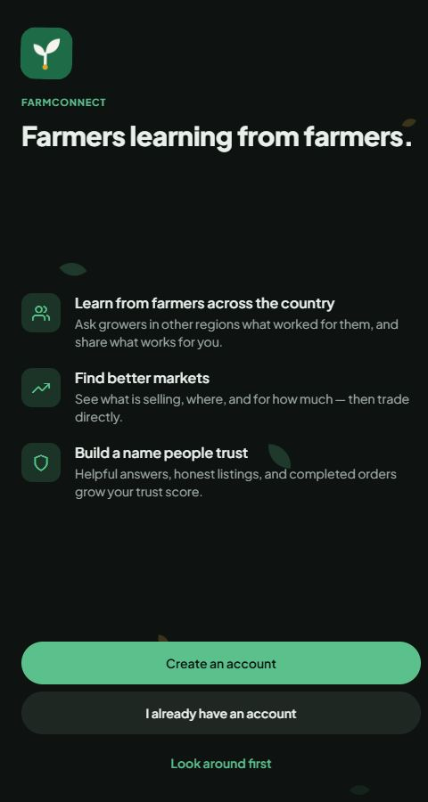

Featured · Mobile app + API + dashboard
FarmConnect
A mobile-first marketplace and community for Kenyan farmers: ask growers in other regions what worked for them, see what's selling and for how much, trade directly, and build a trust score through honest listings and completed orders.
- Mobile app in Expo / React Native: feed, marketplace, community Q&A, orders, profiles, push notifications.
- Node/Express API with MongoDB: JWT and SMS-code sign-in, rate limiting and spam hardening, moderation and content reporting.
- M-Pesa payments for listing boosts and sponsored updates, with buyer protection.
- Admin dashboard (React + TypeScript): analytics, revenue, broadcasts, and partner accounts for organisations.
- Crash reporting with Sentry, a produced pitch video, and 40+ commits of steady iteration.
Expo · React Native · TypeScript · Node.js · Express · MongoDB · Socket.io · Cloudinary · M-Pesa · Render